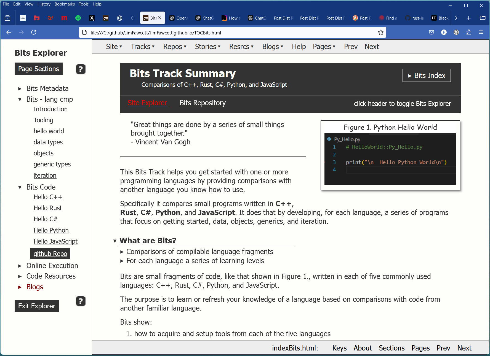

about
Home Page
07/24/2024
Code Workshop
Code repositories, stories, and Documentation.
click me to toggle Site Explorer
Quick Status
Resrcs pages and Blogs still use the old menus.

This image
The source for this image is an SVG file generated from a photo of my desktop, using
a converter application from
Adobe's website
.
- Jim Horning

Disclaimer
1.0 Places to Start:
-
This Home page
Home page available from all pages using Site dropdown in top menu. -
Help Page
Help on site navigation, and definition of terms. Available using Help button on top menu on all pages. -
Site Explorer
Page with ordered links to view site contents in an iframe. Available from Site dropdown in top menu on all pages. -
Track Explorers
Pages with ordered links to view track contents in an iframe. Available by selecting a track from top menu Tracks dropdown. Tracks are groups of pages that focus on one important topic. -
Site Map
Links to almost everything in site organized into large tables, available from Site dropdown in top menu.
- If a link leads to supplementary information then it opens a new tab for comparisons.
- If the link navigates to new material then it opens in the current tab.
1.1 Content

-
Tracks > Bits
Opens BitsExplorer to view comparisons of five languages:C++, Rust, C#, Python, and JavaScriptusing code examples with explanations. This is a good place to start viewing code. -
Tracks > C++ or Rust or C#
Provide language stories and feature Bites. There are a lot of reference materials, demos, and exercises in these tracks. -
Tracks > Basics, WebDev, Design,
Deployment, Projects, Prototypes
Explore areas related to software development.
-
Repos > C++
Opens an index into documentation pages, one for each github repository that stores and provides access to the site's C++ code. Each documentation page has a link to github code. [ show Repository Access ]. -
Repos > Rust, C# and JavaScript
Each open to indices for code in those languages. -
Repos > Other
Indexes code that uses more than one language or has other specialized content.
Site Content by Programming Language
Bar width approximates content volume
| Rust: | |
| C++: | |
| C#: | |
| JavaScript: | |
| Python: | |
|
Links in this chart can take you quickly into material you may not be ready for yet. It's intended to let you briefly sample content before deciding where to go. Each link opens a new tab, so you can peek then close page to get back here. |
|
3.0 Intended Audience:
4.0 Stories, Bites, Bits, and Repositories:
Many of the images and diagrams in this site are expandable. Click on the body to
expand, click on the title to contract.
Languages Content
Table 1. - Language Tracks
| Track | Content | Comments |
|---|---|---|
| Basics | Platforms, Programming, and Object Models | Background information needed to develop code effectively |
| C++ | primitives, functions, classes, relationships, templates | Source compiles to native code, good performance, safe by convention using library tools |
| Rust | primitives, mutation, copy, move, structs, generics, safety | Compiles to native code, good performance, safe by construction through compiler enforcements |
| C# | primitives, classes, generics, garbage collection | Source compiles to bitecode, jitted to native at run-time, memory safe by construction |
5.0 Purpose:
5.1 Migrate code and resource materials from SU website
5.2 Experiment with Web Display Techniques
6.0 Other Resources
- Resources "Resrcs" dropdown menu in the top menu bar.
- The Stories dropdown has C++ and Rust story tutorials. Eventually there will be other language stories as well.
- The C++ Repositories have a lot of C++ code examples and projects.
- The Rust Repositories are now acquiring code examples and projects.
- SiteMap links to most of the resources in this site.
You will find more information about the site goals, design, and status in
SiteDesign.html.
| Repository home: | https://github.com/JimFawcett |
| Syracuse University website: | https://ecs.syr.edu/faculty/fawcett |
Feedback
- What you liked and did not like about the site
- Is site navigation obvious and easy to use?
- Which of the discussions are too complex or too simple?
- Are the provided materials: Stories, Bites, Code, .. interesting?
- Did you find the site attractive
- Is it easy to use the SiteMap, access Stories and Bites, and use the site widgets (expanding images, badges)?